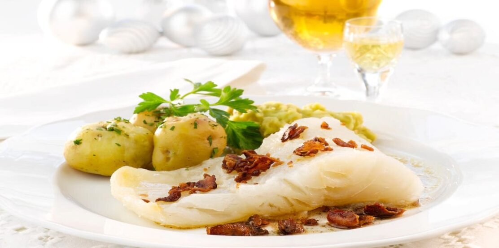

Lutefisk

Lutefisk served with pea stew, bacon and potatoes is Norwegian tradition at its best.
Some also like to serve it with brown goat cheese, syrup or mustard.
Ingredients
- 2 kg lutefisk
- 200g bacon
- 2 tbsp salt
Pea stew
- 3 dl peas, dried
- 1 tbsp butter
- salt
- sugar
Serve with
Steps to make
- Preheat the oven to 200 degrees Celsius.
- Cut the lutefisk into servings and place in a baking pan with skin side down.
- Sprinkle with salt and cover with aluminium foil or a lid.
- Bake the lutefisk in the oven for approx. 30 minutes. Smaller amounts of lutefisk
require shorter time in the oven.
- Dice bacon and fry on medium heat so the fat melts and the bacon gets crispy.
Pea Stew
- Leave the peas in water over night.
- Cook them in fresh water until tender and the stew evens, approx. 45 ml
- Add more water if it gets too firm.
- Gently add butter and taste with salt and a little sugar.